O · Octahedral · 八面体
6 个顶点、8 个等边三角形面、12 条棱。上下两层氧错开，钠坐在交错空隙的中心。锂电里的 LiCoO2 也是这种笼子。
钠离子电池 · 层状氧化物正极
把 Delmas 命名法拆开看：字母写的是钠离子坐在什么笼子里，数字写的是过渡金属氧层重复几层才回到自己。后面补上姜-泰勒：为什么 Mn3+、Fe4+ 会把八面体拉歪，以及掺杂怎样剪断这场协同畸变。
2026 文献续篇：层状正极的化学账本 —— 钉氧、剪协同、锁层滑、把 O 2p 关进可逆窗口。
钠电最常见的一类正极是层状过渡金属氧化物，通式写成 NaxTMO2。TM 是 Ni、Fe、Mn、Cu、Ti 这一类过渡金属。晶体像千层饼：一层刚性的 TMO2 板，一层可以进出的钠。
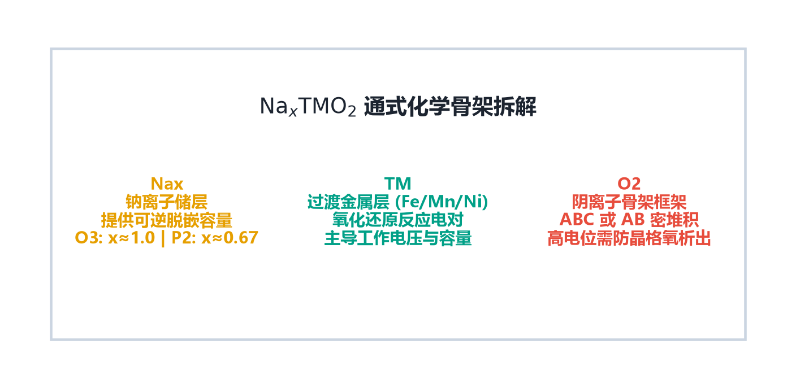
过渡金属几乎总是待在氧八面体里。真正用来给材料起名的，是钠的配位环境，以及氧层怎么摞。
六个氧围住一个钠，可以围成两种几何体。这就是 Delmas 记号里的字母 O 和 P。
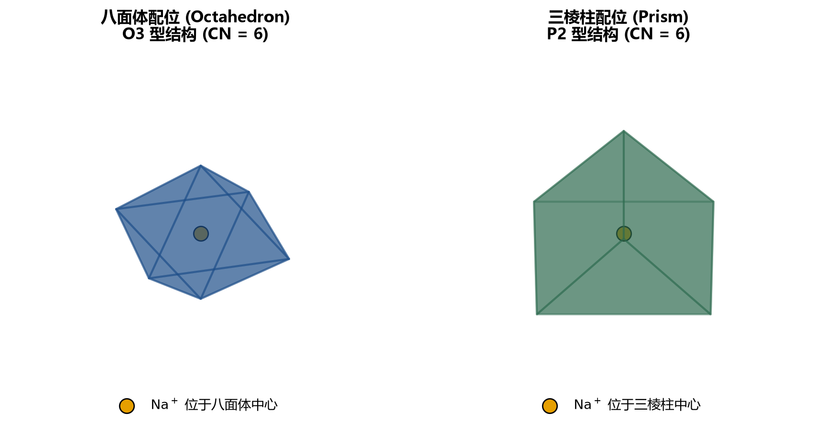
6 个顶点、8 个等边三角形面、12 条棱。上下两层氧错开，钠坐在交错空隙的中心。锂电里的 LiCoO2 也是这种笼子。
上下两个三角形、侧面三个矩形。上下两层氧正对，钠坐在对齐空隙的中心。钠离子半径比锂大，这种更开阔的笼子在钠电里特别常见。
两种笼子的关键差别不在顶点数，而在钠离开时要穿过哪一面。
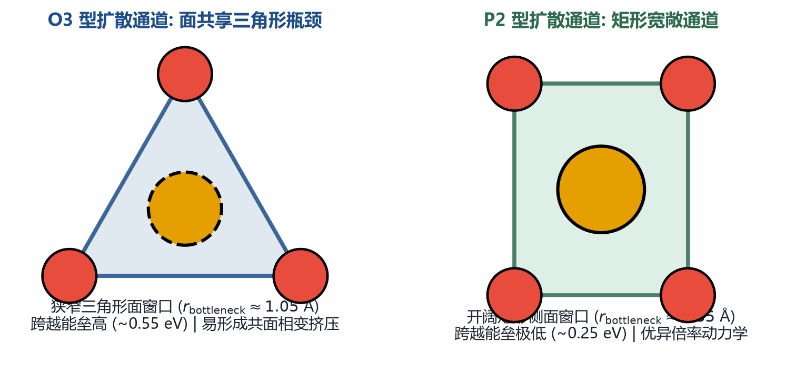
1980 年前后，Claude Delmas 给层状碱金属氧化物定了一套记号：一个字母 + 一个数字。钠电论文里的 O3、P2、P3、O2，全部来自这套规则。
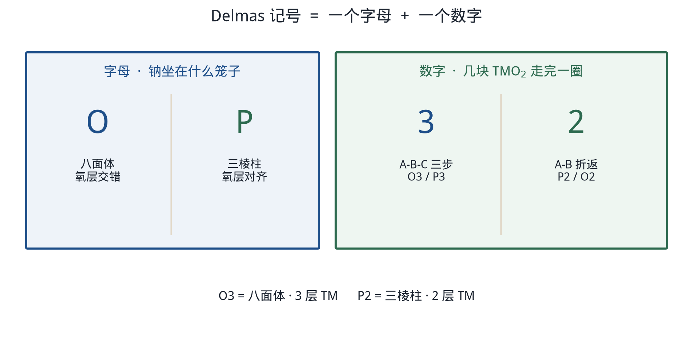
所以 O3 的完整意思是：钠在八面体里，晶胞里有 3 层过渡金属氧板；P2 是：钠在三棱柱里，晶胞里有 2 层过渡金属氧板。
O3 的氧堆积是密堆积序列 ABCABC。相邻氧层交错，钠层两侧的氧错开，围出八面体空隙。化学计量上常常接近 NaTMO2，也就是 x ≈ 1。和硬碳配对时，正极自己就能提供足够的钠。
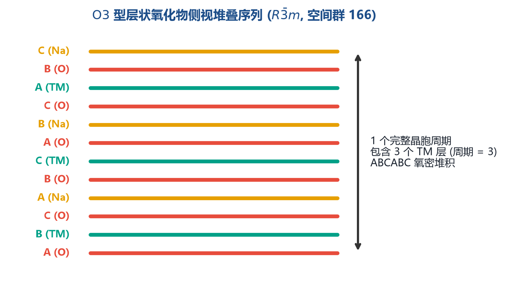
典型材料：NaNi1/3Fe1/3Mn1/3O2（常称 NFM）、NaNi0.5Mn0.5O2。优点是初始钠含量高、可逆容量潜力大。代价也很明确：
P2 的氧堆积是 ABBA。钠层两侧的氧层重叠对齐，围出三棱柱。一个晶胞只有两层 TMO2。化学计量通常是 NaxTMO2，x ≈ 2/3。通道宽、层内二维网络连通，倍率往往更好，空气稳定性也相对更好。

典型材料：Na2/3Ni1/3Mn2/3O2、Na2/3Fe1/2Mn1/2O2。全电池里最大的短板是钠不够：正极一开始就缺约三分之一的钠，硬碳负极还会吃掉一部分不可逆钠，所以工业上常要补钠、预钠化，或做成 P2/O3 双相。

侧视图适合数层，俯视的三维点阵适合体会“交错”和“对齐”。左边 O3：钠层上下的氧不在同一套格子上。右边 P2：钠层上下的氧叠在一起。
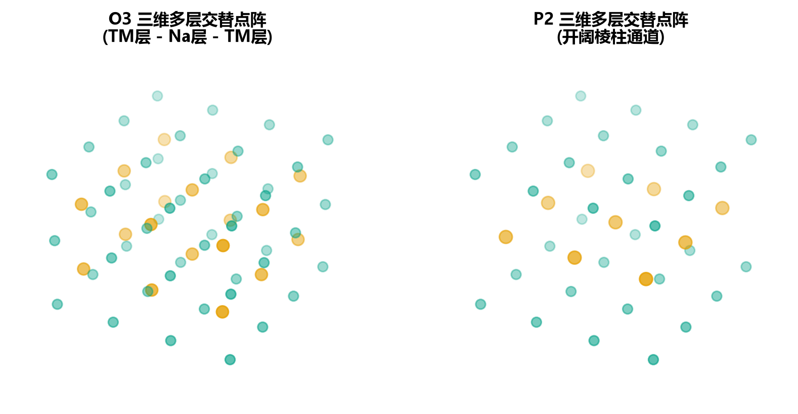
离子传导快慢，看的是钠从一个稳定位点跳到下一个位点时，中间那个瓶颈有多窄、静电有多狠。
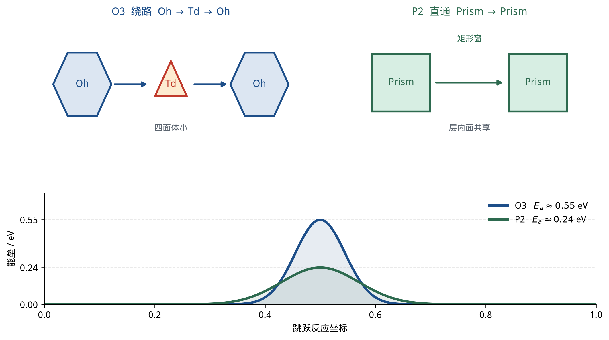
Oh → Td → Oh。四面体空隙小，并且常常和相邻 TMO6 面共享。钠半径又大，这段路走得费劲，所以纯 O3 的倍率普遍一般。
Prism → Prism。矩形窗口比三角形窗口大，层内三棱柱互相面共享，连成二维通道。这是 P2 倍率好的结构根源。
脱钠等于抽走层间的“支柱”。空位多了，TMO2 板会相对滑动，氧堆积序列改写，配位环境跟着变。这就是相变。
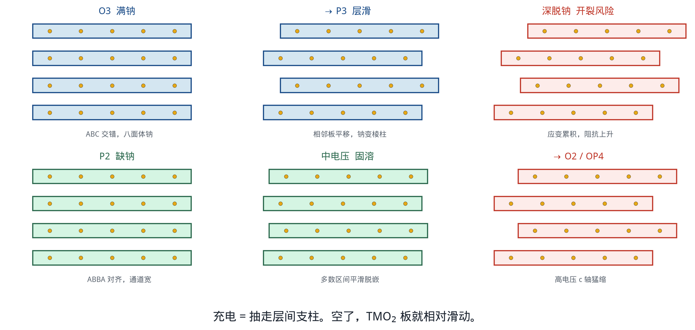

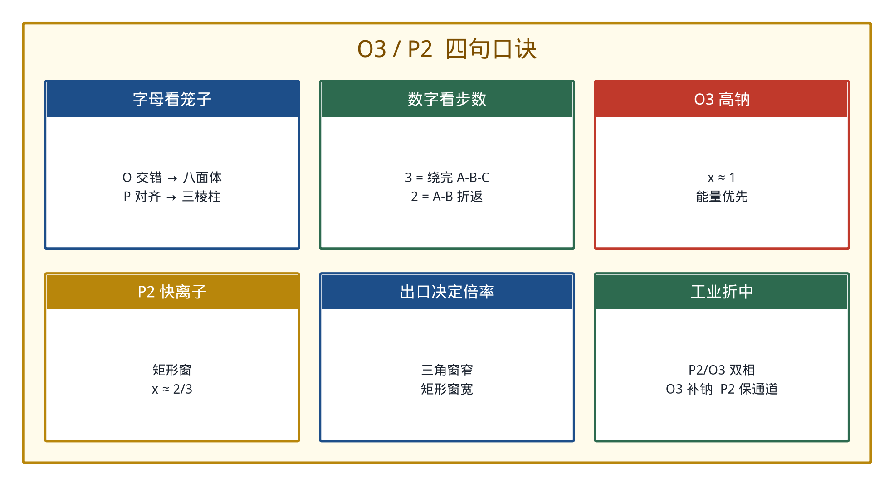
数字数的是：沿 c 轴走几块 TMO2 板，氧的横向落点才全部复位。密堆积平面里，氧只有三个落点，记作 A、B、C。相邻层换字母，氧错开，钠坐进八面体；相邻层字母相同，氧正对，钠坐进三棱柱。
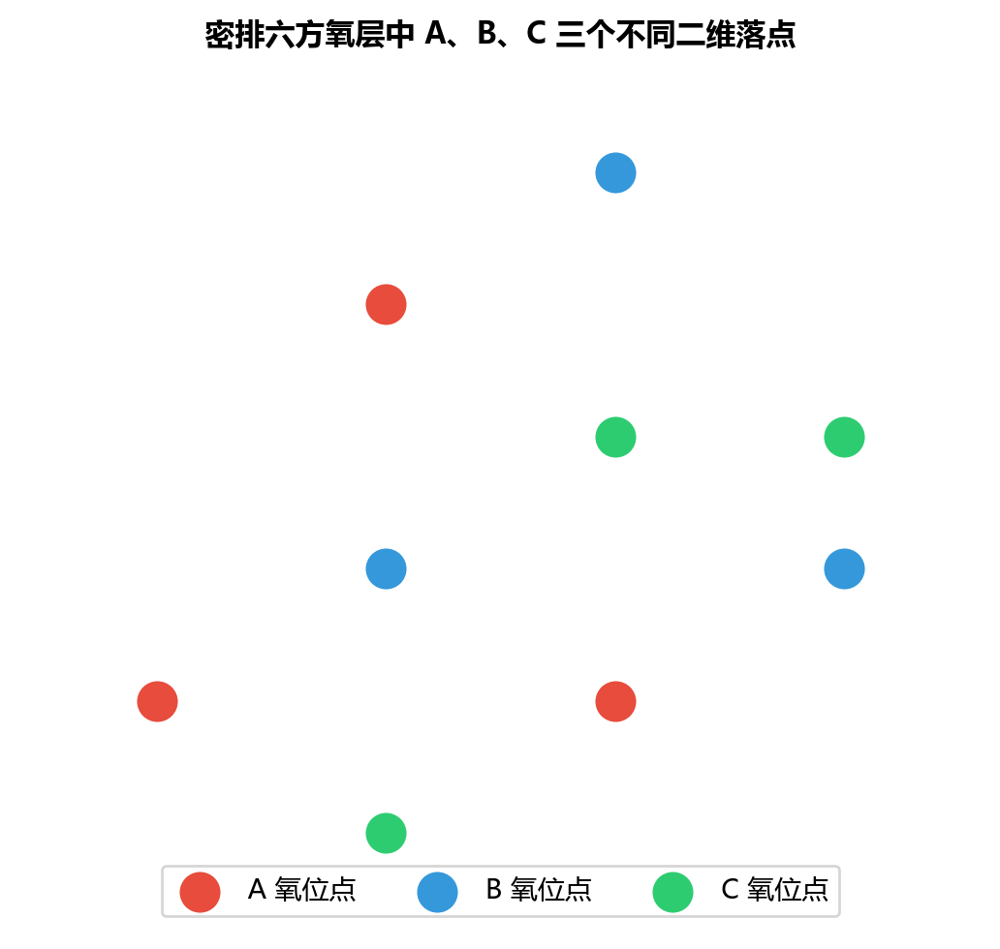
O 型要一直错开，落点必须绕 A→B→C 这个三角形。三角形有三条边，走完一圈正好三块 TMO2，氧序列写成 ABCABC。少走一层，字母停在 C，晶胞合不上，所以 as-synthesized 的八面体高钠相是 O3，没有稳定的“O1 高钠相”这条日常配方。
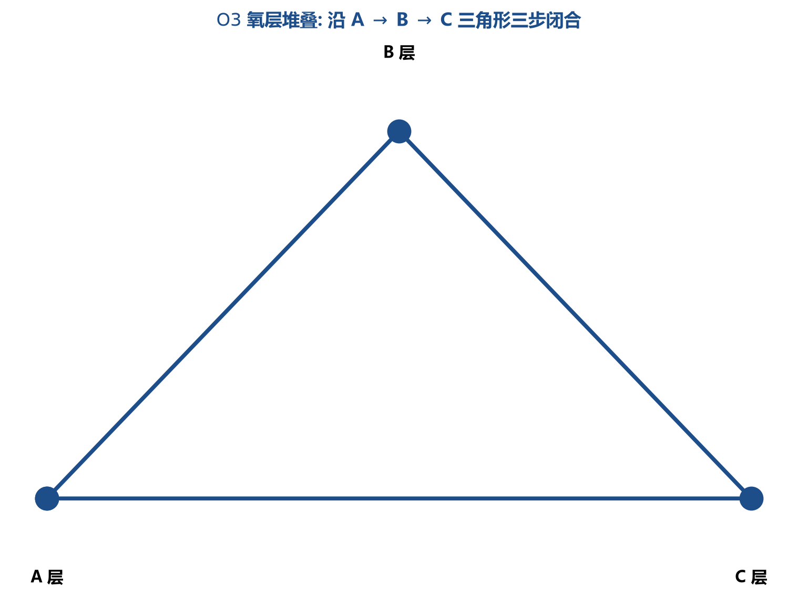
P 型允许相邻氧层字母相同，于是路径从“绕三角形”变成“在两个顶点之间来回弹”。A 走到 B，钠层用 BB 对齐围成三棱柱；再从 B 走回 A，用 AA 对齐围成下一层三棱柱。两块 TMO2 就复位，氧序列写成 ABBA。再少一层只剩半个晶胞，所以 P 型的最短周期是 2。

同一套 A/B/C 规则也生出亲戚相：P3 是棱柱钠但绕一圈三步（ABBCCA），常见于 O3 脱钠后的层滑移；O2 是八面体钠但两步闭合（ABAC），代价是 NaO6 与 TMO6 面共享，静电很挤，多半是 P2 高电压滑移产物，而不是合成态主力。
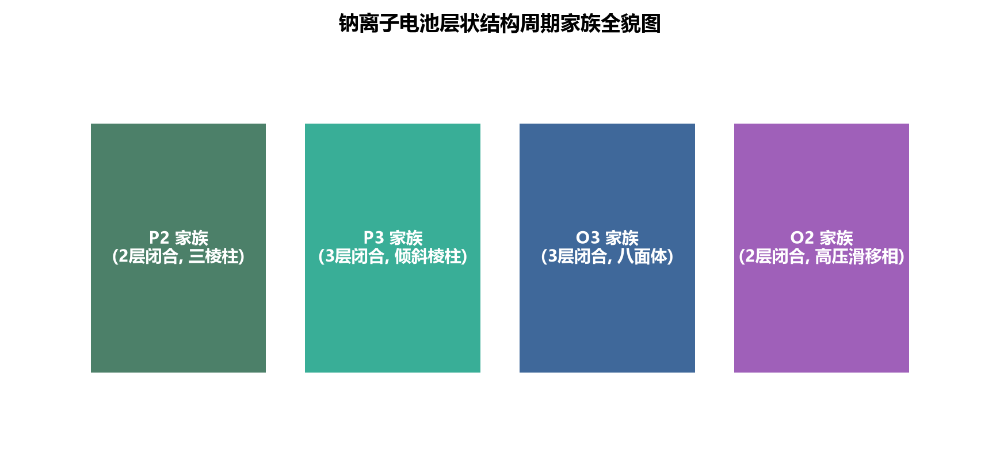
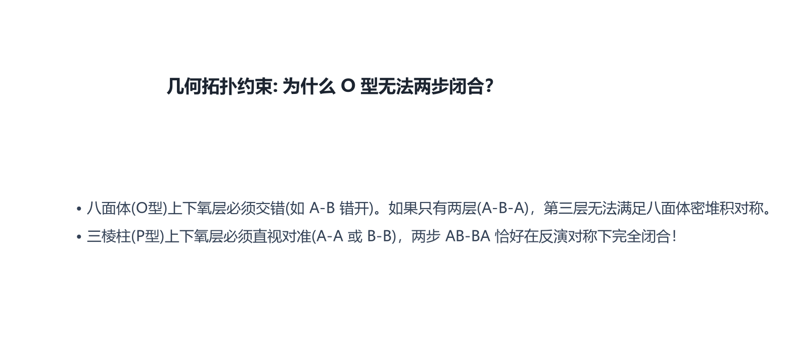
过渡金属正极里，TM 几乎总坐在六个氧围成的笼子中心。化学上写成 ML6：M 是金属，L 是配体（这里是 O2-），六个配体沿笛卡尔轴 ±x、±y、±z 摆开，点群是 Oh。

自由离子的 5 条 d 轨道能量相同。配体是负电荷，会排斥 d 电子云。排斥有多重，取决于轨道叶瓣正不正面朝配体。

dz2 沿 z 轴，dx2-y2 沿 x、y 轴。六个氧正好坐在这三根轴上，电子云和负电荷迎头相撞，静电最狠，轨道升。
dxy、dxz、dyz 的叶瓣指向 45°，躲开六个氧，电子云主要待在配体缝里，静电轻，轨道降。
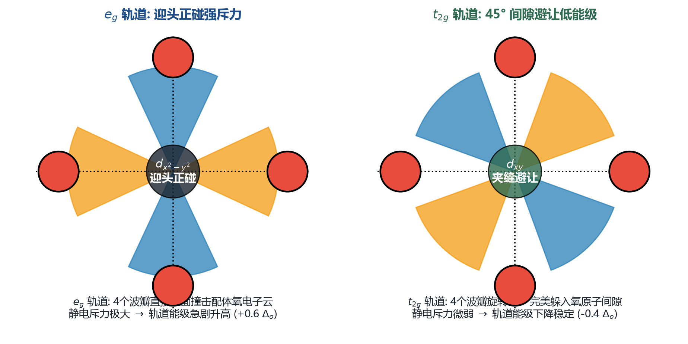
劈开之后仍要守住“重心”：两条 eg 各升 0.6 Δo，三条 t2g 各降 0.4 Δo。2×(+0.6) + 3×(−0.4) = 0。劈裂宽度 Δo（也写 10Dq）就是配位场强。
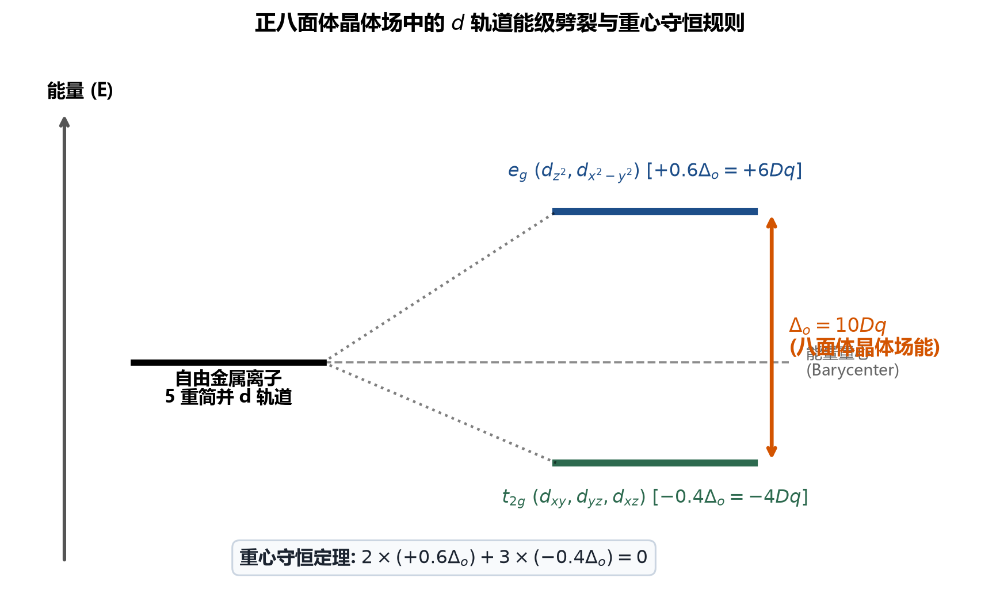
电子往里填时，要比两件事：爬上 eg 要付 Δo，同一条轨道再塞第二个电子要付成对能 P。

记号来源：t2g、eg 是 Oh 点群的不可约表示。t = 三重简并（三条），e = 二重简并（两条）；下标 g 表示轨道对反演是偶的。不必先背点群，记住“t 三条、e 两条、g 在中心对称笼子里”就够用。
上一节把五条 d 轨道劈成了 t2g 和 eg。规则八面体里，两条 eg 仍然简并。如果 eg 正好有 1 个电子，电子不知道该进哪条。晶体的办法是把八面体拉长或压扁：一条轨道降、一条轨道升，电子进更低的那条。这就是姜-泰勒效应（Jahn–Teller, JT）。
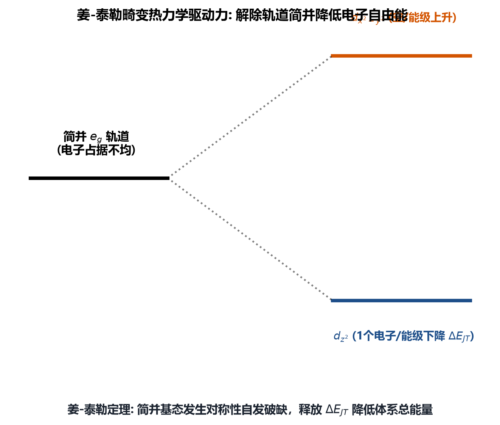
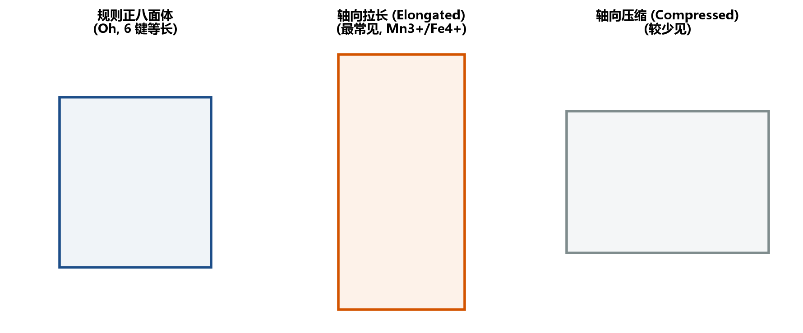
强 JT 离子的共同特征是 eg 上有单电子或单空穴：高自旋 d4（eg1）、低自旋 d7（eg1）、d9（eg3）。eg 全空、半满或全满时，没有这种电子驱动力。
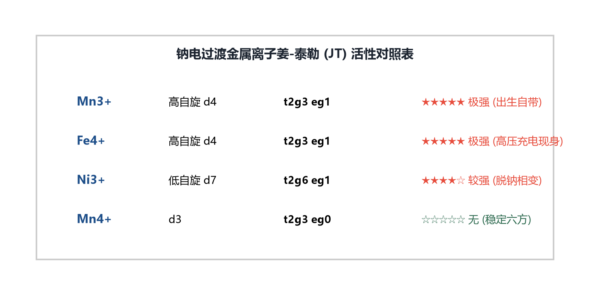
两者都是高自旋 d4，组态 t2g3 eg1。差别在于它们什么时候出现。
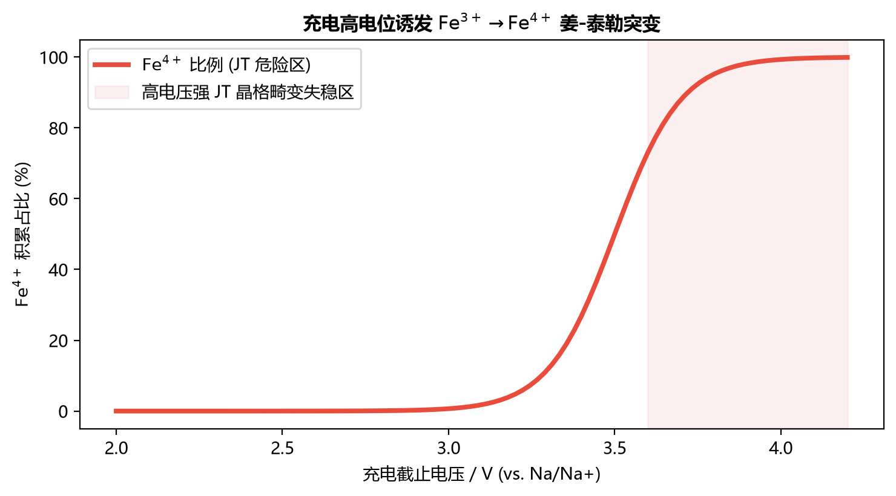
NaMnO2、P2-Na2/3MnO2 含大量 Mn3+。相邻 TMO6 共享氧，一个八面体拉长，邻居必须跟着压缩，长程锁成单斜 O′3 或正交 P′2。钠扩散变成各向异性，循环中反复的协同畸变把颗粒撕开。
放电态 Fe3+ 是高自旋 d5，eg2 半满，JT 关着。一充电变成 Fe4+（d4），JT 突然打开。Fe4+ 还极强氧化，容易把电子从氧上抽走，铁往四面体间隙迁移，电压滞后和不可逆容量一起出现。所以 NFM 不能无限制往高电压冲。
伤循环的是协同姜-泰勒：整层八面体按同一套长短轴咬合，六方对称被压成正交 / 单斜，c 轴和面内同时应变。
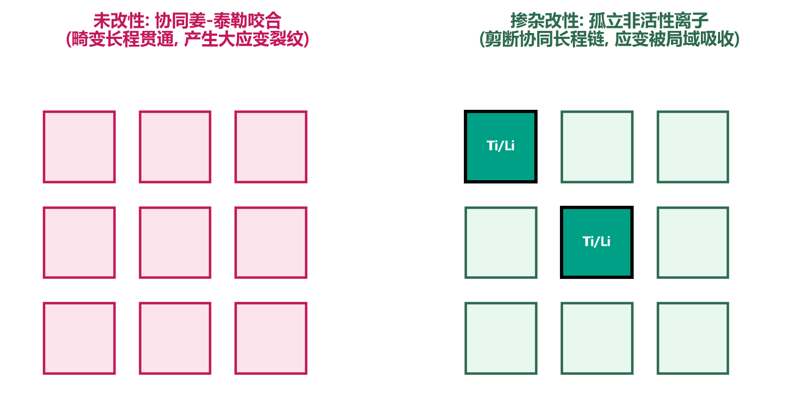
掺杂办两件事：少制造 eg1 离子，再让剩下的畸变无法对齐。论文里常见的 Ti、Mg、Li、Al、Cu、Zn，走的是同一套逻辑。
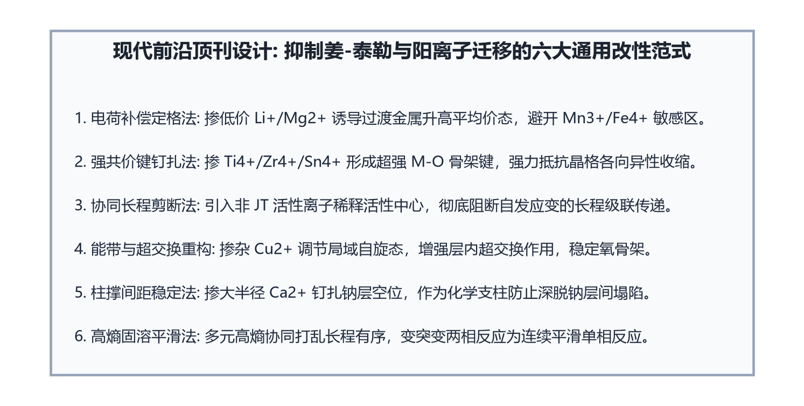
所以你会在配方里反复看到：锰基层掺 Ti/Mg/Li/Cu；铁锰镍做成 NFM 混排；高电压窗口被故意收窄，避免一次造出太多 Fe4+。掺杂的目标是压住协同畸变和相变，让宏观骨架回到六方。

全部插图由 Python 脚本生成，依赖 matplotlib 与 numpy。脚本在当前工作区的 scripts/draw_sib_structures.py，图片输出到 web/images/。
python3 scripts/draw_sib_structures.py脚本里八面体用 (±1,0,0)、(0,±1,0)、(0,0,±1) 六个顶点；三棱柱用上下两个等边三角形沿 z 方向拉开。O3 / P2 侧视图用错位圆点表示 ABC 或 AB 氧位，金黄条带标出钠层。